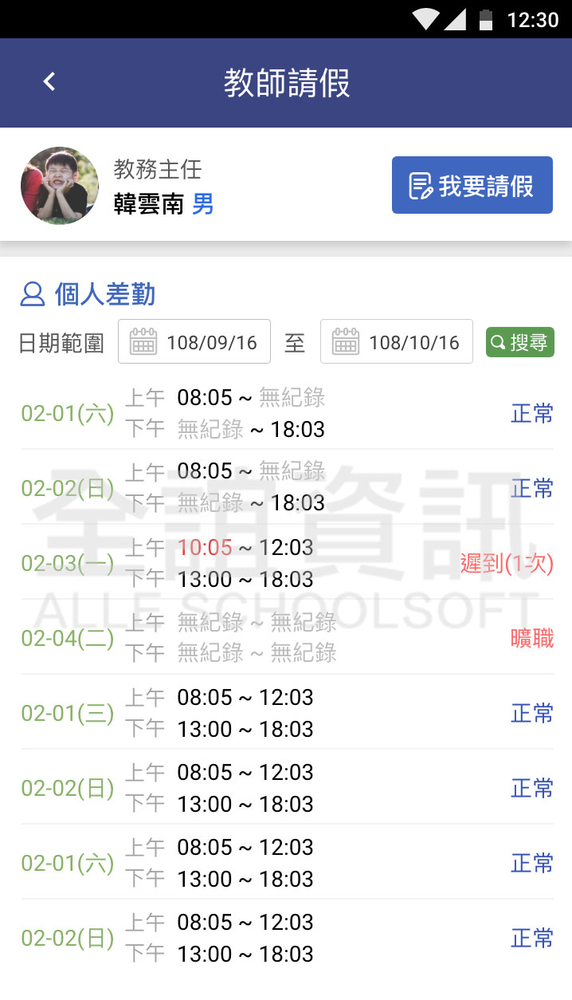

<div class="APP_application_list_class">
  <div class="APP_application_list_title">
    <span class="APP_application_list_title_left">
      <h4>教師請假</h4>  
    </span>
    <span class="APP_application_list_title_right">
      <span class="APP_list_user APP_user_green">
        老師
      </span>
    </span>
    <div class="clear"></div>
  </div>

  <div class="APP_application_list_words">
    除基本請假功能外，另外多出選擇導護代理人、代課類別、公文文號以及附件上傳。
  </div>

  <div class="APP_application_list_pic">
    <span class="APP_list_pic_margin">
      
    </span>
    <span class="APP_list_pic_margin">
      
    </span>
  </div>
</div>
